|
|
|
|
|
|
|
| RealSpectrum homepage | |
| Download | Development status | Features | Online manual | Screenshots |
Last updated: August 23rd 2006
It's real!
| Yes! The most complete and innovative Spectrum emulator is here and it rocks! World's first 100% exact multicolor effects in full-screen, high-fidelity sound reproduction with surround effect and user-definable stereo panning presets, run-time selectable resolutions, real TZX FlashLoading, physical tapes through the soundcard, tons of disk interfaces with support for physical disks in PC drive, IF-1 emulation, Sinclair network over the Internet (TCP/IP), MB-02+ emulation, lots of Spectrum models and many more cool things for a huge list of features! RealSpectrum is intended as a high-fidelity Spectrum emulator with no compromises. It reproduces the Spectrum hardware with a previousely unseen accuracy and it has been designed to support the most advanced features for the most realistic audiovisual experience. You will be using the closest thing to a real Spectrum machine :-) |
NOTE: The standard ROM package now contains also the DISCiPLE and +D rom files with pre-booted operating system; these roms are included with explicit permission of Datel.
IMPORTANT: Please read the manual! The accompanying HTML manual explains how to use RealSpectrum in detail, so that you can get the most of it. Besides, it contains useful suggestions and troubleshooting.
NOTE: Make sure you download the correct version for your CPU because you get a respectable +10% performance boost. Also, the Pentium II build won't run on K6's and Pentiums.
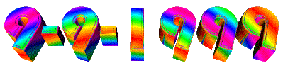 The multicolor day Here is the current development status report, where you can see how
the coding is going on. Check it often for the latest features added to
the project and to know when the final version will be released.
Linux version: Now that RealSpectrum has reached the end of its development cycle, we'll try to make a quick
conversion of R14 to Linux during the summer.
For any questions, comments or suggestions write
to ramsoft@bbk.org
RealSpectrum release #14B "Finale" (v0.97.26)
Download MSDOS version (RSDOS):
AMD version
AMD K6, K6/2, K6-III, Duron and Athlon processorsDownload
Pentium II version (i686)
Intel Pentium Pro, Pentium II, Celeron, Pentium III and Pentium 4Download
Pentium version
Intel Pentium and Pentium MMX processors onlyDownload
Standard ROM files
Freely distributable ROMs required by the emulatorDownload
User's Manual
The complete user's guide for on-line readingOn-line manual
Manuale in Italiano (beta9)
Manuale utente completo in lingua italiana per la lettura on-lineLeggi on-line
Download Windows version (RS32):
Important notes!
Additional notes about the Windows version (RS32), please read!RS32 notes
AMD version
AMD K6, K6/2, K6-III, Duron and Athlon processorsDownload
Pentium II version (i686)
Intel Pentium Pro, Pentium II, Celeron, Pentium III and Pentium 4Download
Pentium version
Intel Pentium and Pentium MMX processors onlyDownload
Standard ROM files
Freely distributable ROMs required by the emulatorDownload
User's Manual
The complete user's guide for on-line readingOn-line manual
Additional downloads:
sockvxd.exe (for DOS version only)
VxD module required for network emulation over the Internet (TCP/IP)Download
cwsdpmi extender
DPMI extender release 5 (needed under pure MSDOS only)Download
Softcrack
Softcrack software (v9.2 and v9.4) and original documentationDownload
HDF utilities
Tools to read/write HDF files to/from real hard-disks (by G. Lancaster)Download
Latest development builds (alpha):
NOTE: Development builds may be unstable or partially working, and they are provided for evaluation purposes only. The archives must be unpacked over a previous install of the latest official release.
RealSpectrum MS-DOS
No updates available.N/A
RS32
Build 0.97.36 with RealDisk support for Windows 2000/XP/2003 (requires the installation of this driver) and IDE bugfixesDownload
Why "the multicolor day"? Because it was the day when we publicly
announced RealSpectrum, the world's first Spectrum emulator capable
of 100% exact contended memory and multicolor emulation! Yes, after many
studies we have finally discovered all the ULA secrets and we are now able
to show even the hardest multicolor demo effects exactly like your real
Spectrum does on TV! You can see some screenshots
here, showing some hard pieces of software doing very nice tricks with
the rasters that only RealSpectrum can show in this way! It's been a long
and hard work because the ULA does much more weird things than you may
think and everything must be exact for all the programs to work
correctly! But, as someone said in a famous demo, we made it, we made it...
:-)
Development
status
Expected date for the next release: development stopped.
May 1st 2005. A new test version of RS32 is available for download from the "Latest development builds" box above.
Build 0.97.31 finally brings back the long missed RealDisk feature for all modern Windows operating systems, including
Windows 2000, XP and 2003. The functionality is completely equivalent to the DOS version,
with the ability to read, write and format both standard and copy-protected disks.
In order to access RealDisk, you must first download and install the free FDRAWCMD driver; more information about the driver
can be found at the author's homepage, where a 64-bit version is available too.
Please check that the type of your PC disk drive matches the one reported in the ALT-F6
control panel (default: 3.5" 1.44MB). If it's different, move the cursor over the line
labeled "Realdisk drive" and press SPACE repeatedly until the description matches your
actual configuration.
This build is highly experimental, so please report any problems to the usual address.
November 11th 2004. The MSDOS version of RealSpectrum has been updated to v0.97.26 too.
November 6th 2004. Oops, in the last release the tape saving option in ALT-F7 didn't work anymore after the update to
the menu layout (forgot to change a menu index, thanks Andrea!). Make sure that you download the refreshed version 0.97.26. Sorry for the inconvenience! The DOS version is coming next week
around Wednesday.
November 2nd 2004. A micro-update of RS32 is now available (R14B), which corrects a small bug in the
RZX options menu which could cause a crash with external snapshots not placed into the same
directory as the RZX file itself. As a bonus, we have also added support for the CodeMasters CD,
so you can now load the games of this collection into the emulator; read the changelog or chapter 6
for more details.
The DOS version of RealSpectrum will be updated in the next days.
RealX is progressing, please be patient a little more. The Linux version of RealSpectrum, instead,
is still starving in our to-do list because of lack of time :-(
July 21st 2004. RealSpectrum R14 is finally out, and we're a bit sad to announce that this is the last release planned
for the glorious v0.xx series. We have dedicated so much time, passion and resources to this project over the past
four years and it's now very difficult to put all this behind of us. Personal computers have changed a lot during this time:
now everybody use Windows 2000/XP and a DOS-minded application like RealSpectrum, which was great at the Windows 98 era,
now just looks inadequate for today's GUI standards, although it still provides many unique functionalities.
That's why we have started RealX, a brand new emulator built upon all the good and bad things that we have learned with
RealSpectrum. RealX now requires all of our time, so we have to stop to support RealSpectrum; of course you can still
send us bug reports and comments and we might release a small update for urgent things, but don't expect anything for sure.
The version counter has stopped at 0.97.23, just a little below the fatidic v1.00: this is just a way to remind ourselves
that we couldn't manage to achieve the goal of the "ideal emulator" with all the features that we wanted and most importantly
without all the bugs that we didn't want ;-) All our expectations are now for RealX.
Ok, now don't forget to check out the release notes to see what's new in R14. Happy Speccying! :-)
The most complete and up-to-date list of features is available into the manual.
Video
Probably you have already realized that RealSpectrum is offering the
best video rendering accuracy to date. Read on:
Video resolution can be changed on the fly from the GUI, as well as the other settings like gamma and VGA synchronization.
Sound
In our opinion, audio is no less important than video so we are paying
a special attention to the sound quality. Even if the work is not yet finished,
RealSpectrum is already sounding pretty good as you may guess from the
specs already implemented listed here:
All these settings can be changed in realtime from the sound control panel
(GUI).
Z80 core
The CPU emulation is ultra-accurate, fruit of our own investigations
into the Z80 architecture. Our Z80 core is extremely stable and almost undistinguishable from the real chip.
Other features
Some more aspects:
And here are some screenshots taken from RealSpectrum
running some critical multicolor effects; all the images are complete pictures
including the full Spectrum border! (Resolution: 400x300)
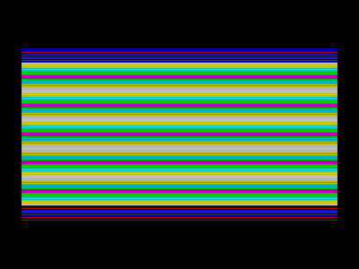 |
Overscan Demo by Busy Soft |
| Shock Megademo by E.S.I |
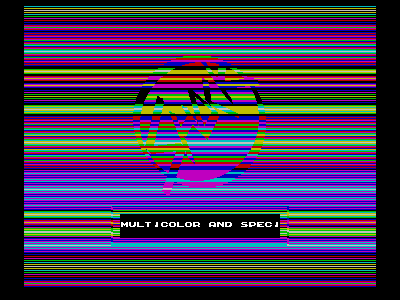 |
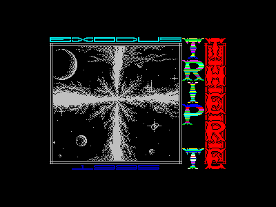 |
There by Exodus |
| Black Lamp - (C) Software Creations |
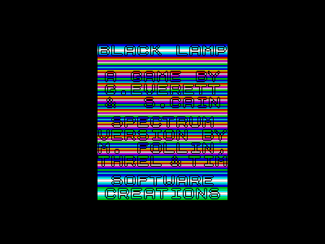 |
| Defenders of the Earth - (C) Enigma Variations | |
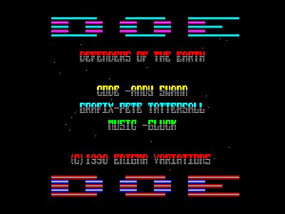 |
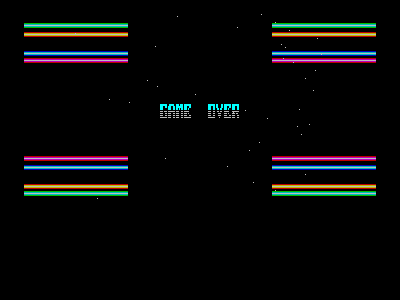 |
| MDA Demo - by Busy Soft | |
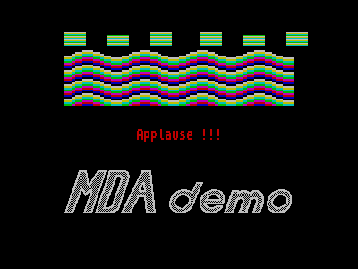 |
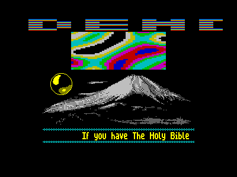 |
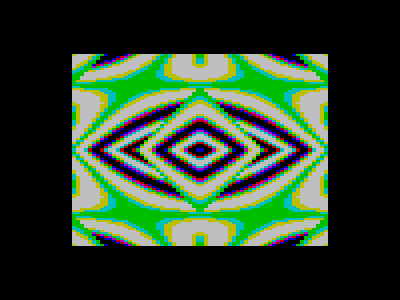 |
Echology
by Busy Soft
(ShadeVision) |
| No
More Intelligence 2
by Dynamte Dynastie |
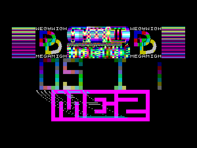 |
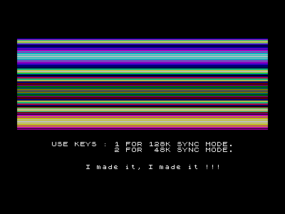 |
No
More Intelligence 3 - No Panic
by Dynamite Dynastie |
| Digi Synth by Prisoner |
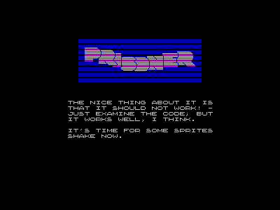 |
| Hercules - by Busy Soft | |
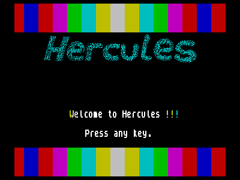 |
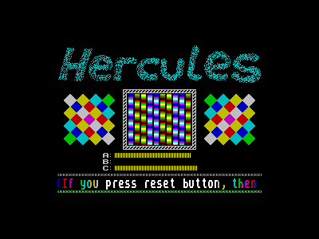 |
| Rage - by X-Trade | |
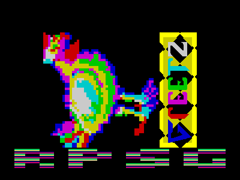 |
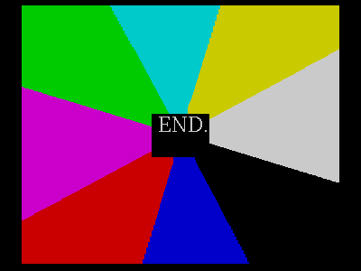 |